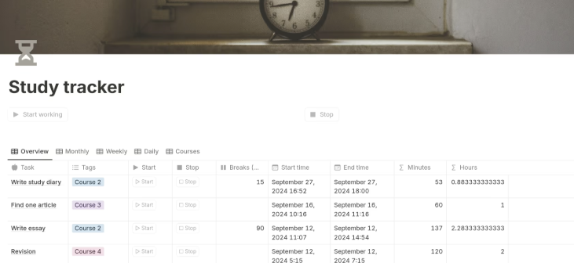
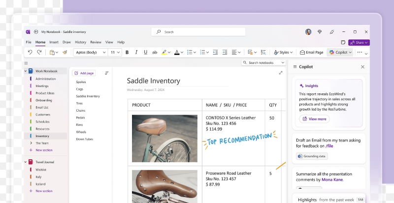

Academic Help
Uni study is less about working harder and more about working smarter. These tools and habits can make a real difference to how manageable study feels.
Study tools that actually help
Notion
Notion is a powerful note-taking and organisation tool that lets you keep lecture notes, deadlines, task lists, and schedules all in one place.
- Create separate pages for each paper or subject
- Organise notes by week or topic
- Track assignments and deadlines visually
- Great if you like structure and customisation

OneNote
OneNote works well if you prefer a more traditional notebook style. It’s especially useful for handwritten notes, diagrams, and annotating slides.
- Good for pen + tablet users
- Easy to organise by notebooks and sections
- Syncs across devices
- Less setup, more writing

Academic habits that really matter
- Look at past papers early. If your course provides past exams, use them to understand how questions are asked, not just what content is covered. Exams in university tend to be nicer than high school in some ways, as the past paper content can often be the same structure and type as the real exam (which means you are not often in an exam surprised with a question you've never done before). It's really important to look at any old content as well, that often comes up in exams and talk to lecturers if you can, so they can give you advice on what you should focus on the most. This is why listening/going to lectures is really important, because sometimes certain topics are briefly covered, which end up becoming a really big mark question in the real exam.
- Don’t rewrite notes endlessly. Focus on understanding concepts and practising questions instead. It's important, however, to write down things by hand as you will remember them better, and in degrees like engineering, you have most exams on paper.
- Use support early. Learning advisors, student hubs, and tutors are there to help... not just when you’re failing. However, university is independent so it is up to you to understand the content by yourself at times and use tools like Youtube, or past lecture videos. Although showing up at lectures is important, you need to figure out how you learn best and what study style is most productive for you. The first semester will be the hardest, where you are trying to understand by yourself at times, without constantly being able to talk to teachers about it. But there are lots of great study techniques like scheduling certain study sessions, or even studying with your peers which can be an immense help.
- Studying looks different at uni. Feeling lost at first does not mean you’re behind.. it means you’re adjusting. Study at university becomes quite independent when compared to high school. This takes a lot of time to get used to, and concepts at university are covered really fast. Some students even say that a lecture sometimes is comparible to a whole term of learning in high school! So the most important thing is to not leave things to the last minute as you will not get a good grasp of the content that way.
- Study with your peers Studying with peers can be something that becomes really helpful, especially when you get closer to tests and exams. Helping each other look at questions a different way, or having discussions can really help you better grasp the content and get an understanding of what the question is really asking. It can also be really helpful studying with your peers because you will have individual strengths and weaknesses that you can help each other on, as well as being able to test each other on certain questions using flashcards etc. University can be a really isolating space, and being able to not rely on student services for help all the time will help you in the future, as you will learn to get more independent in solving questions and understanding different problems.